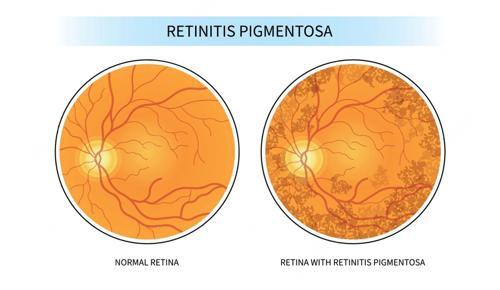

Nov 21, 2023
Revolutionizing pediatric retinal disease diagnosis,
our innovative approach employs Convolutional Neural Networks (CNN)
integrated with Tkinter framework for swift & accurate detection of Retinal
Pigmentosa in young patients, ensuring early intervention for better outcomes.

Multiple Disease Prediction System employs machine learning algorithms on medical data for early diagnosis. Utilizing predictive models, it assesses risk factors to provide timely and accurate predictions, aiding in proactive healthcare interventions.
Identifying Defects in Various Fabrics using Convolutional Neural Networks involves employing advanced image processing techniques to analyze fabric textures and patterns & enhancing quality control in manufacturing processes.
Road Transportation Analysis & Statistical Modeling involves studying and interpreting data related to road traffic patterns, vehicle movements, and transportation infrastructure. Utilizing statistical techniques, it helps optimize traffic flow, enhance safety, and inform strategic planning for efficient and sustainable road networks.

Classifying flowers using Convolutional Neural Networks (CNNs) involves leveraging deep learning to analyze and categorize floral images. CNNs excel at capturing intricate patterns, enabling accurate identification of various flower types based on visual features, revolutionizing automated flower recognition.
Future Stock Trend Estimation using LSTM involves predicting stock prices using Long Short-Term Memory, a type of neural network. LSTM analyzes historical data patterns to forecast future stock movements, aiding investors in making informed decisions.
Helmet and License Plate Recognition (HLPR) is a technology that utilizes computer vision algorithms to detect helmets and extract license plate information from images or videos. This enhances safety monitoring and facilitates automated vehicle identification in various applications, such as traffic management and security systems.